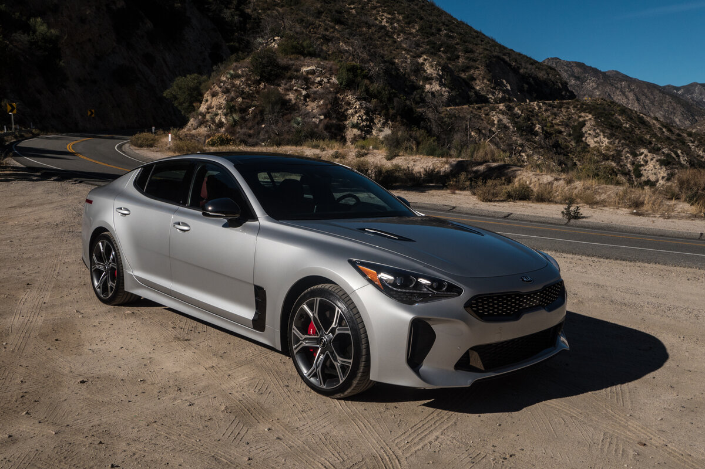
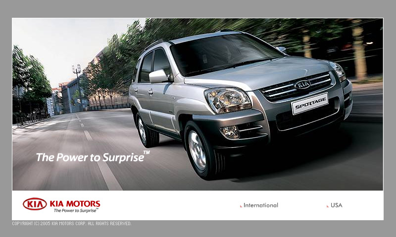

Лучшие автомобильные сайты
Американское рейтинговое агентство J.D. Power and Associates опубликовало рейтинг лучших автомобильных сайтов в домене .com, принадлежащих мировым автопроизводителям...

Американское рейтинговое агентство J.D. Power and Associates с периодичностью раз в полгода проводит исследование,
насколько автомобильные веб-сайты автопроизводителей удовлетворяют потребности покупателей новых автомобилей. С каждым
годом автопроизводители все больше убеждаются в том, что усовершенствование электронных представительств в Интернете и
расширение их технических возможностей прямо влияют на показатели продаж.

Потенциальные покупатели оценивают любой автомобильный сайт по четырем характеристикам, говорят в агентстве. Это –
дизайн, скорость работы, удобная навигация и информативное содержание. Результаты июньского исследования основаны на
оценках более чем 11,4 тысячи потенциальных покупателей новых автомобилей, собранных в апреле 2008 года, которые
обозначили, что они собираются приобрести машину в течение ближайших двух лет.
Потенциальные покупатели оценивают любой автомобильный сайт по четырем характеристикам, говорят в агентстве. Это –
дизайн, скорость работы, удобная навигация и информативное содержание. Результаты июньского исследования основаны на
оценках более чем 11,4 тысячи потенциальных покупателей новых автомобилей, собранных в апреле 2008 года, которые
обозначили, что они собираются приобрести машину в течение ближайших двух лет.
Потенциальные покупатели оценивают любой автомобильный сайт по четырем характеристикам, говорят в агентстве. Это –
дизайн, скорость работы, удобная навигация и информативное содержание. Результаты июньского исследования основаны на
оценках более чем 11,4 тысячи потенциальных покупателей новых автомобилей, собранных в апреле 2008 года, которые
обозначили, что они собираются приобрести машину в течение ближайших двух лет.
Самым удобным и продвинутым сайтом, по оценке респондентов J.D. Power and Associates, оказался сайт Kia.com, который
набрал 872 балла по 1000-бальной шкале. Буквально по пятам за Kia идут сайты Ford.com (871), Mazda.com (870) – особенно
посетителям нравится графическое решение, дизайн этих сайтов. Очень удобные сайты, по мнению респондентов, у таких
компаний, как Honda, Jeep, Lincoln, Porsche, BMW, Cadillac и Subaru. Тем не менее на сегодняшний день лидерство по
популярности в Интернете держит скромненькая, но стабильная корейская марка Kia.
“Kia уже несколько лет успешно работает с потребителями в своем электронном представительстве, обеспечивая бесперебойную
работу сайта, быструю загрузку страниц и легкую навигацию, – комментирует директор по медиамаркетингу агентства J.D.
Power and Associates Арианна Уокер. – Фокусируясь на этих важных аспектах опыта работы в Интернете, Kia постоянно
предвосхищает запросы и потребности посетителей, которые ищут автомобиль. Фактически Kia уже четвертый раз занимает
первое место в десяти уже проведенных нами исследованиях на эту тему”.
В среднем же большинство автопроизводителей обновляют свои официальные сайты где-то раз в два-три года. Это очень
полезная вещь, считают маркетологи, потому что любое обновление, даже небольшое, моментально оправдывает затраты и
позитивно влияет на восприятие марки автомобиля и является эффективной мерой для поддержания интереса потенциального
покупателя к теме вообще.
В частности, Ford и Porsche довольно часто вносят какие-то интересные дополнения в свои сайты, не проводя глобального
обновления, говорят маркетологи, что очень заметно в рейтинге эффективности этих сайтов за последние четыре года.
Например, с января 2008 г., здесь заметно улучшилась навигация и скорость работы сайтов.
“Ford и Porsche являются прекрасным примером того, как постоянное улучшение электронного представительства сказывается
на популярности марки, – говорит А. Уокер. – Обновления ведь можно делать и с достаточно ограниченным бюджетом, просто
периодически внося изменения не только в содержание, но в невидимые посетителю структуру и программирование сайта. В
результате это будет не менее эффективно, чем полная и глобальная смена сайта. Даже минимальное обновление отвечает
потребностям посетителя, а значит, и потенциального покупателя автомобиля”.